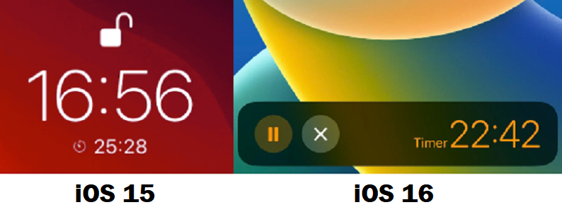
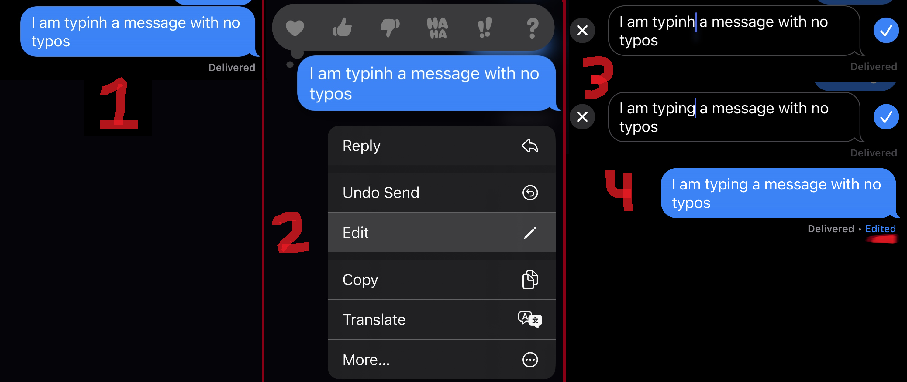
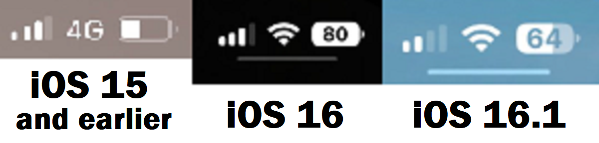

The latest stable release of Apple's iOS 16 was made available
in October, but the next update, iOS 16.2, has already become
available as beta software for developers. iOS 16 was first
introduced in September, featuring additions to the iPhone[1]
software such as lock screen-specific customization features
which most notably allow users to add widgets to their lock
screen. They also include options to change the font and color
of the clock, as well as changes to the way things such as the
timer and music player are handled.

Returning to the music player for the first time since iOS 10 is
the option to have album art fill the entire lock screen, rather
than just appearing as a small image in the player. This option
may appear automatically, so users who dislike the feature may
disable it by tapping on the album art.
Notifications have also been updated as they now default to
staying stacked towards the bottom of the screen, though users
still have the option to go back to the original list layout if
preferred.
Changes to iMessage include the ability to quickly edit a
message or unsend it, though this will only work properly when
messaging others who also have iOS 16 installed. If a user with
iOS 16 attempts to edit a message they sent to a user with iOS
15 or lower, or a friend with a phone running Android, the
edited message will instead be sent below the original message.
Don't count on the feature if you aren't sure which version your
friend has! Similarly, the "unsend" feature will not have any
effect.

Apple introduces its own feature akin to the Magic Eraser found
on Google's Pixel 6 and 7 devices in the form of a new option to
lift a subject in a photo from the background using AI. Because
of the extra processing power needed, this feature is not
available on Apple devices with a chipset older than the A12
Bionic. The same applies to Live Text, introduced with iOS 15,
which recognizes words from an image. Android users have enjoyed
such a feature since 2017 thanks to Google Lens, which attempts
to recognize text in images as well. This feature is also
available in the Google app found on the App Store, but now iOS
users will have this type of feature built into the software on
their phone as well. Starting with iOS 16, Live Text works on
paused videos as well, negating the need to take a screenshot.
Live Text can also do much more than simply copy text, as users
can now use it to instantly call phone numbers, convert the
currency on a price tag, translate languages, scan QR codes, and
more. Again, Google Lens is capable of these things as well, so
users of Android devices will not have to worry about missing
out.
Since the first release of iOS 16, updates[2]
have been in the works to finish adding previously-announced
features for the software, including shared iCloud Photo
libraries, and enabling support for the Live Activities API.
Live Activities take advantage of the updated lock screen by
allowing apps to push information in a timely manner for
activities such as workouts. These features are now available as
of iOS 16.1, released on October 24th. This update also brings
an improvement to battery icon in the status bar, as the
percentage, which was finally made visible on iPhones with the
notch thanks to iOS 16, as the battery level now has a visual
indicator which scales with the percentage and changes color
much like the original battery indicator on older iPhones.

Now, iOS 16.2 has been released through the Apple Beta Software
Program. It features support for Live Activities with sports
scores through Apple TV, and introduces the previously-announced
Freeform app, a canvas that can be used for collaborating with
others on projects. Apple continues to update iOS 16 to include
everything that has been announced for it, and users can expect
the stable release of iOS 16.2 at some point before the end of
this year.